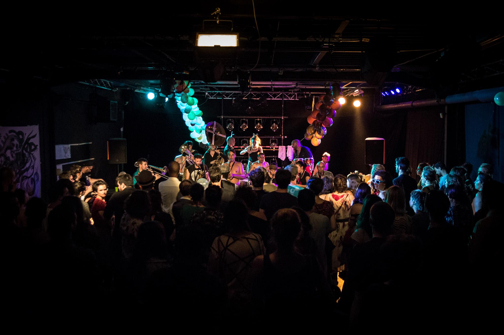

.
.
Welcome!
Cookie is a digital art festival known as demoparty.
Come over the weekend and watch stunning animations on modern or retro computers, attend to workshops and live performances, or simply meet passionate people around a beer.
Don't be afraid if you are a newcomer, people will kindly help you, so come and enjoy the party!
Timetable
It is possible to sleep on site until Sunday 10th for the people coming from abroad. We may even organize a walking tour to visit some parts of Paris, if you're up to that.
Friday 8th
2 PM: Gates open
7 PM: Shader showdown (live shader coding)
8 PM: Live Act TBC
9 PM: Live Act TBC
Saturday 9th
All day long: Demoshows & documentaries
2 PM: Talks & Workshops TBC
6 PM: Deadline compos
7 PM: Compos
8 PM: Live Act TBC
9 PM: Prizegiving ceremony
10 PM: Live Act TBC
Location
Le Jardin d'Alice hosts the demoparty.

The venue is easily accessible trough the subway (line 9, direction Mairie de Montreuil, stop Robespierre), which is itself reachable if you come by train or plane.
If you come by car, there are no free parking place in the neighborhood, you'll have to park in a parking facility.
Compos
General rules
- The production must not have been released previously.
- Remote entries are allowed!
- You should only submit your own work. In particular, copyrighted material is strictly forbidden.
- You CAN start working on your production NOW. The production does NOT need to be made 100% at the party place.
- Deadline is saturday 2017-12-09 @7PM CEST
- Winners will be determined by voting from all visitors.
- Entries may be disqualified by the orga team if deemed innapropriate (pornography, illegal content...) or breaking the
rules listed here.
If you have questions regarding the rules, feel free to send them to rules@demojs.org.
Food
Yes, actual food, like, from your kitchen!
- All the dishes will lined up with a number (for voting), author(s), and weight.
- Remember that ideally everyone at the party should get a bite to be able to vote eventually. Planning for a 1-2 person
dish is probably not going to make you popular.
- Plates and cuttlery will be made available at the party place, you don't need to provide them.
- Dishes will be voted for exactly like other compos, cook for win!
4k intro
Play with a few bytes!
- Combined size of all files must fit within the allowed limit.
- Note that 4k means 4096 bytes or less. Counting is done in bytes, *not* characters (beware of Unicode).
- The production has to work offline. (no HTTP server required, no internet connection).
- You are NOT allowed to retrieve content from the Internet.
- You should not use any operating system provided media files such as the "Media" and "Music Samples" directory.
- You can use built-in generic fonts such as serif, sans-serif.
Demo
No size limit, but it must be real-time!
- No maximum filesize. However don't try to run a movie in an iframe.
- Must be non-interactive.
- You can retrieve external content from the Internet, but it is at your own risk. We shall not be liable for connection
problems during demo projection.
Music
Produce an audio track!
- Maximum length is 8min. Anything longer will be cut by the almighty god of the demoscene, so you may want to cut beforehand
if you need control over the ending.
- Any music style or tech is welcome, from chiptune, amiga-style sounds to the latest hype sequencer.
- Reminder: if you are registered with SACEM, GEMA, or any other right-holding organization, you CANNOT enter this competition.
(Otherwise the event will have to pay rights for your music)
Graphics
Draw!
- Any style is welcome, from pixel art to full-on 3D!
- Please include a few work-in-progress images with your entry (from first draft to final composition, wireframes for
3D)
Wild
Anything else, get crazy!
- From toasters to mechatronics, you can present anything fun!
- Please contact the organization team to plan ahead if you come with special hardware.
- You can also make a video of your thing if it's easier to explain or show what it is, but please also bring the original
hardware if you can.
Compo machine
The compo machine will be a PC with Windows, on which we can install software as needed (e.g DOSBox). For anything funkier
than that, please bring your own hardware or get in touch with us so that we can prepare the appropriate environment
for your production.
Specs:
- Xeon 6 cores HT
- 64GB RAM
- GTX 970